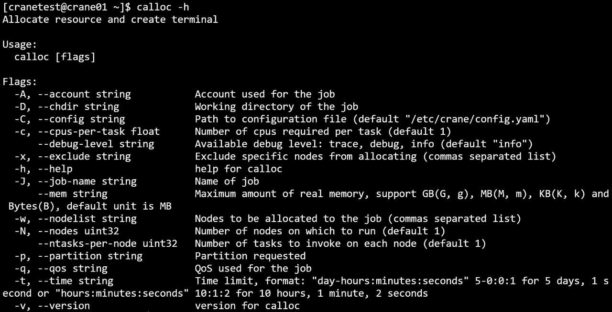
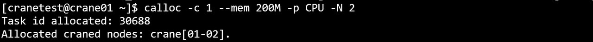
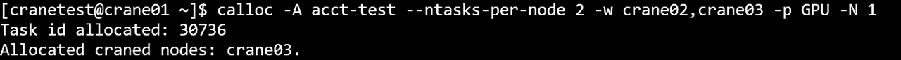
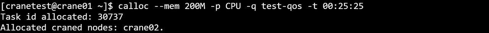
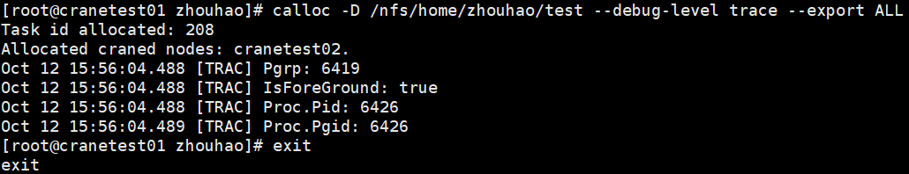
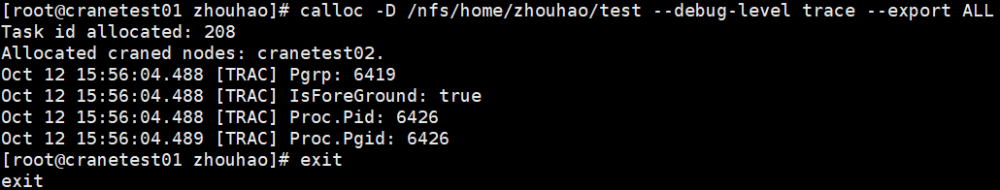
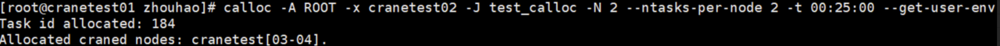
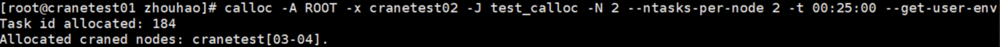
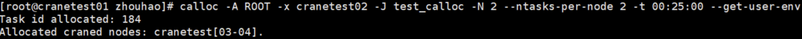

calloc 提交交互式任务
calloc 使用命令行指定的参数申请资源，任务启动时，会进入新的用户终端，用户需要自行登陆到计算节点并启动任务。calloc需要在有cfored运行的节点上启动。
calloc 只支持通过命令行指定请求参数，支持的命令行选项：
- -h/--help: 显示帮助
- -A/--account string：提交作业的账户
- -D/--chdir string：任务工作路径
- -C/--config string：配置文件路径(默认 "/etc/crane/config.yaml")
- -c/--cpus-per-task float: 每个节点申请的CPU核心数
- --debug-level string：可用的调试级别：trace（跟踪）、debug（调试）、info（信息，默认值为 “info” ）
- -x/--exclude string：从分配中排除特定节点（以逗号分隔的列表 ）
- --export string：传播环境变量
- --extra-attr string：作业的额外属性（JSON 格式 ）
- --get-user-env：加载用户的登录环境变量
- --gres string：每个任务所需的通用资源（Gres），格式：“gpu:a100:1” 或 “gpu:1”
- -J/--job-name string：作业名称
- --mail-type string：当特定事件发生时通过邮件通知用户，支持的值：NONE（无）、BEGIN（开始）、END（结束）、FAIL（失败）、TIMELIMIT（达到时间限制）、ALL（所有，默认值为 NONE ）
- --mail-user string：通知接收者的邮件地址
- --mem string：最大实际内存量，支持 GB（G，g）、MB（M，m）、KB（K，k）和 Bytes（B）为单位，默认单位是 MB
- -w/--nodelist string：要分配给作业的节点（以逗号分隔的列表 ）
- -N/--nodes uint32：要在其上运行作业的节点数量（默认值为 1 ）
- --ntasks-per-node uint32：在每个节点上要调用的任务数量（默认值为 1 ）
- -p/--partition string：请求的分区
- -q/ --qos string：作业使用的服务质量（QoS ）
- -r/ --reservation string：使用预留资源
- -t/ --time string：时间限制，格式：“day - hours:minutes:seconds”（如 5 - 0:0:1 表示 5 天 1 秒 ）或 “hours:minutes:seconds”（如 10:1:2 表示 10 小时 1 分钟 2 秒 ）
- -v/ --version：calloc 命令的版本
- 例：
calloc -h

退出calloc新启动的终端将结束任务。
- 例：在CPU分区，申请两个节点，一个CPU核心，200M内存
calloc -c 1 --mem 200M -p CPU -N 2
运行结果：

- 例：在GPU分区下，申请一个节点，每个节点上运行两个任务，申请节点的候选列表为crane02,crane03，且任务提交在acct-yan账户下
calloc -A acct-test --ntasks-per-node 2 -w crane02,crane03 -p GPU -N 1
运行结果：

- 例：在CPU分区下，申请200M内存，任务运行最长时间为25分钟25秒，且任务运行在test-qos下
calloc --mem 200M -p CPU -q test-qos -t 00:25:25

calloc -D /path

calloc --debug-level trace

calloc -x cranetest02

calloc --get-user-env

calloc -J job_name
